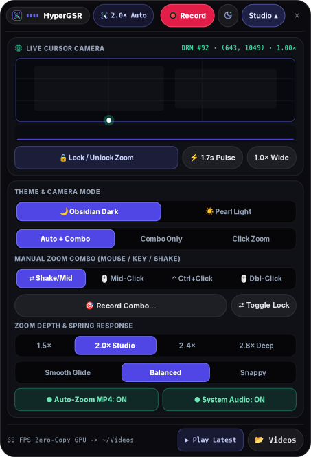

The camera follows your cursor. On Wayland, in 56 MB.
HyperGSR is a screen recorder for Linux, written in Rust. It reads the cursor straight from the GPU’s hardware cursor plane without root, then moves a critically damped spring camera to where you work. Encoding runs on NVENC or VAAPI.
Move your cursor. Stop on something. Watch the camera settle.
This is the same spring model HyperGSR uses, running in your browser at fixed 240 Hz substeps. Pause on a region for a quarter second and the camera zooms in. Move fast and it pulls back.

A recording island that stays out of the capture.
The island is a layer-shell surface anchored to the top of the output, so it never steals focus and never shows up as a window. The screenshot follows this page’s theme.
- Encoder and quality presets
NVENC · VAAPI - Auto-zoom mode and target zoom
1.25–3.5× - Custom zoom combo recorder
Record Combo… - Light and dark themes
HYPERGSR_THEME
ZoomConfig::default(): k = 60, zoom 2.00×, hold 1650 ms, deadzone 0.065.
Read the zoom engine
Small enough to leave running.
Numbers come from a 1080p60 recording on a hybrid AMD Radeon and NVIDIA RTX 3050 laptop under COSMIC, with NVENC preset P4.
Native Rust and GTK4. No browser engine, no plugin host.
Encoding runs on NVENC. The CPU copies each frame once and steps the camera.
DRM hardware cursor plane, read at 60 Hz through libdrm.
Critically damped, so it settles without overshoot or wobble.
Your numbers will depend on GPU, compositor, and resolution. Run gpu-recorder-rs --report to see the encoders and cursor planes it finds.
Three parts. Each one is a file you can read.
HyperGSR started as a reverse-engineering pass over gpu-screen-recorder 6.1.4. What it kept, what it replaced, and why is written up in RE_ANALYSIS.md. The longer story is in reading the cursor from the GPU on DEV.
Read the cursor from the GPU, not the compositor.
Wayland hides the global pointer from clients, and XWayland only sees its own windows. HyperGSR asks the kernel instead: the hardware cursor plane already holds the exact position the display controller is drawing.
Inspect src/cursor.rsfor j in 0..pcount {
let name = prop_name(j);
if name.starts_with(b"FB_ID\0") {
fb_id = pval;
} else if name.starts_with(b"CRTC_X\0") {
crtc_x = Some((pval as u32) as i32);
} else if name.starts_with(b"CRTC_Y\0") {
crtc_y = Some((pval as u32) as i32);
}
}
// fb_id changes when the cursor shape changes
let nx = (cx as f32 / self.screen_w).clamp(0.0, 1.0);A spring with exactly enough damping.
Pan and zoom are three springs with damping set to 2√k, the critical point. The camera reaches its target as fast as it can without overshooting. Pan runs at 0.78 of zoom stiffness so it glides a little behind.
Inspect src/zoom_engine.rslet k_zoom = cfg.spring_stiffness.clamp(20.0, 260.0);
let c_zoom = 2.0 * k_zoom.sqrt();
let k_pan = (k_zoom * 0.78).clamp(18.0, 220.0);
let c_pan = 2.0 * k_pan.sqrt();
let ax = -k_pan * (self.cam_x - self.target_x) - c_pan * self.vel_x;
let az = -k_zoom * (self.cam_zoom - self.target_zoom)
- c_zoom * self.vel_zoom;
self.vel_x += ax * dt;
self.cam_x += self.vel_x * dt;
// clamp the centre so the crop never samples outside [0, 1]A small C helper for the portal, then the GPU encoder.
The ScreenCast portal hands over a PipeWire stream. A standalone helper negotiates DMA-BUF or MemFd buffers and feeds them to FFmpeg with NVENC or VAAPI. The portal restore token is reused, so you pick a screen once.
Inspect src/pw_portal_capture.cSPA_PARAM_BUFFERS_dataType,
SPA_POD_CHOICE_FLAGS_Int(
(1 << SPA_DATA_MemFd) |
(1 << SPA_DATA_MemPtr) |
(1 << SPA_DATA_DmaBuf))
/* encoder pipe */
"-c:v h264_nvenc -preset p4 -tune hq"
" -rc vbr -cq 19 -b:v 0 -pix_fmt yuv420p"
" -movflags +faststart"Where it fits next to the tools you already use.
OBS and gpu-screen-recorder are excellent general recorders. HyperGSR focuses on one thing they don’t do out of the box: a camera that follows the cursor on Wayland.
| Capability | HyperGSR | gpu-screen-recorder | OBS Studio | Electron studio recorders |
|---|---|---|---|---|
| Cursor-following auto-zoomRecorded into the MP4 | ✓ Spring camera | — | Plugin | ✓ |
| Global cursor on native WaylandWithout root | ✓ DRM cursor plane | — | — | Varies |
| Custom zoom combosMouse, modifier+click, shake, key | ✓ | — | Hotkeys | Varies |
| Hardware encodingNVENC, VAAPI | ✓ | ✓ | ✓ | Varies |
| Resident memory at 1080p60 | 56 MB | Not measured | 340 MB | 650+ MB |
| License | MIT | GPL-3.0 | GPL-2.0+ | Varies |
Memory figures are resident set size measured on the same machine during a 1080p60 recording. “Plugin” means a third-party plugin exists but is not part of the default install.
From clone to first recording in three commands.
The installer detects apt, dnf, or pacman, installs GTK4, gtk4-layer-shell, libdrm, PipeWire, and FFmpeg, then builds a release binary.
Clone and install
Asks for sudo once, for system packages only.
git clone \
https://github.com/KunalSiyag/gpu-recorder-rs
cd gpu-recorder-rs
./install.shRun the island
Pick a screen once. The portal remembers it.
cargo build --release
./target/release/gpu-recorder-rs
# light theme, studio open
HYPERGSR_THEME=light HYPERGSR_EXPANDED=1 \
./target/release/gpu-recorder-rsScript it
Every UI action is also a flag.
# 5-second recording with auto-zoom
gpu-recorder-rs --record-seconds 5
# encoders and cursor planes, as JSON
gpu-recorder-rs --reportPick an issue. Most are a single file.
The codebase is about a dozen Rust modules and one C helper. Each issue below names the file to start in. CONTRIBUTING.md covers setup and tests.
Add palettes next to the existing light and dark themes and expose them in the studio picker.
Render shortcuts like Ctrl+C or Super+Enter during post-processing, using the keystroke buffer that already exists.
Inset the recording on a background with rounded corners and a soft shadow, as an export option.
Questions people ask first.
Does it need root?
/dev/dri/card*, which the logged-in desktop user can already open. HyperGSR never becomes DRM master and never changes display modes.Which compositors work?
zwlr_layer_shell_v1 when the compositor supports it and opens as a regular window otherwise. Reports from other compositors are welcome as issues.What if my compositor draws the cursor in software?
XQueryPointer. That is exact on Xorg, but under XWayland it only follows the cursor over XWayland windows. --report shows which source it found.Which GPUs are supported?
Can I zoom by hand instead of automatically?
How is this related to gpu-screen-recorder?
/var/lib/flatpak path that breaks user installs. HyperGSR is a separate Rust codebase and does not ship gpu-screen-recorder code.